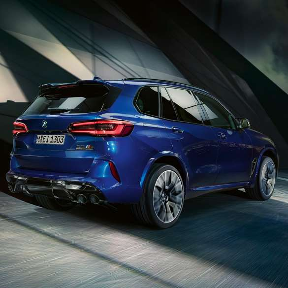

X5는 3시리즈와 더불어 BMW가 세그먼트의 왕좌에 있는 모델이기 때문에 BMW가 그만큼 공들여서 만든다. F바디가 타 브랜드의 거센 도전에 직면하자 세대교체 주기를 고집스럽게 7년으로 해오던 고집마저 꺾어가면서 5년으로 줄이고 G바디로 넘어올 정도로 회사에서 애지중지하는 모델이며 세그먼트를 대표하는 모델인 만큼 도심형 럭셔리 SUV의 선구자[1]답게 공간활용도와 SUV라는 한계를 극복하고 고유의 스포츠 성능을 뽐내면서 럭셔리함도 모두 가지고 있는 차량이다. BMW는 이 자랑스러운 역사를 자신들의 SUV를 SAV라고 부르며 자부심을 뽐내고 있다. 그만큼 자타가 공인하는 명차.
